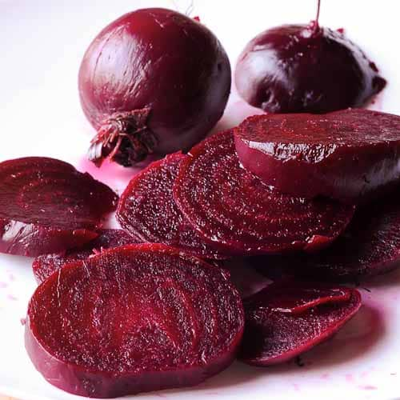

Pickle-braised Beets

Description
Beets can be a divisive thing; some people enjoy the intensely earthy flavors and others... do not. That said, the barrier
to entry for many people is simply knowing how to cook them properly. Raw beets are very hard, and often people resort to
simply boiling them in water. We can do better.
Ingredients
- 2-3 Large Beets (Red or Gold)
- Apple Cider Vinegar
- White Sugar
- Kosher Salt
- Pickling Spice Blend
Steps
- Mix 2 Tbsp sugar and 3Tbsp kosher salt into 1 cup of Apple Cider Vinegar
- Place beets and cider vinegar mixture into deep baking dish
- Cover beets with water, then add 2 Tbsp of the pickling spice blend
- Cover with foil, then place in 350 degree oven and cook for 2 hours.
- Let beets cool in liquid for 30 minutes, then peel while still warm. Store beets in liquid until ready to use; they will keep for a very long time.